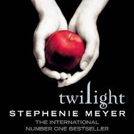
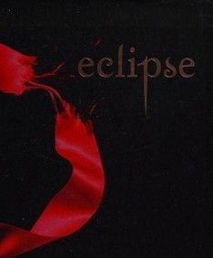
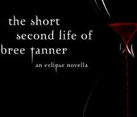
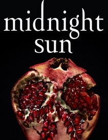

Twilight
Novel Series
Author:Stephenie Meyer
Twilight

Twilight is a 2005 young adult vampire-romance novel by author Stephenie Meyer. It is the first book in the Twilight series, and introduces seventeen-year-old Isabella "Bella" Swan, who moves from Phoenix, Arizona, to Forks, Washington.
New Moon
New Moon is a 2006 romantic fantasy novel by author Stephenie Meyer. The second installment in the Twilight series, the novel continues the story of Bella Swan's relationship with vampire Edward Cullen as she enters her senior year of high school.
Eclipse

Eclipse is the third novel in the Twilight Saga by Stephenie Meyer. It continues the story of Bella Swan and her vampire love, Edward Cullen.
Breaking Dawn
.jpg)
Breaking Dawn is the 2008 fourth novel in The Twilight Saga by American author Stephenie Meyer. Divided into three parts, the first and third sections are written from Bella Swan's perspective, and the second is written from the perspective of Jacob Black.
The short second life of bree tanner

The Short Second Life of Bree Tanner is a novella in the Twilight series by author Stephenie Meyer. It tells the story of a newborn vampire, Bree Tanner, who is featured in the third book of the series, Eclipse (2007).
Midnight Sun

Midnight Sun is a 2020 companion novel to the 2005 book Twilight by author Stephenie Meyer. The work retells the events of Twilight from the perspective of Edward Cullen instead of that of the series' usual narrating character Bella Swan.